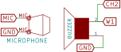
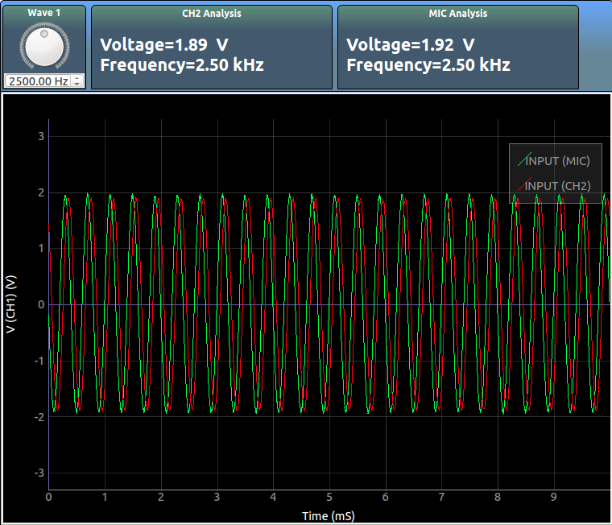

Piezoelectric Buzzers
Learn to use a piezo buzzer

A piezoelectric buzzer oscillates best around a certain frequency. In this experiment, we shall drive the piezo buzzer using the oscillating voltage output from W1, and figure out the frequency at which it is loudest.
The amplitude and frequency of the measured sound waves are shown at the top. Since the loud sound can easily exceed the microphone’s range, you should keep the buzzer at some distance.
If the MIC input waveform appears flattened at the top or bottom, it means that the range has been exceeded, and you must move the buzzer further away, or reduce the amplitude of W1 using the knob on the unit.
